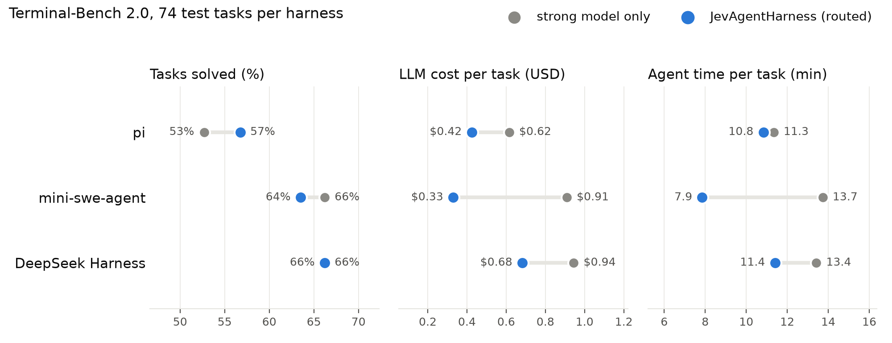

客服工单分诊
官方演示中 2.3 秒标记一批消息、
成本约 0.1 美分
同类任务聊天式大模型约需 20 秒
从一张发票读懂决策模型，到网页操作、塔防和 Coding Agent
模型怎样给选项打分 ／ 哪些操作值得交给 Jev ／ 编码助手每轮该读什么、由谁来做
Choice 的三个概率相加为 1；Noul 的 0.82 表示“疑似重复”这一陈述的概率。Score 用等级概率加权，2.1 落在“优先”和“紧急”之间。Box 读取图像，返回金额所在的区域。
Jev 是非自回归决策模型。开发者给它状态、问题和候选项，它返回程序可用的答案与概率。先换一张工单，再点 Run。
2026-11-03 · 官方 Playground 三次实测回放。切换样本可交互查看真实结果，不会发起新请求。
生成模型要把类别、风险和优先级逐个写成输出 token。Jev 接收同一份发票状态，一次请求就能分别给三道题打分；若第二题要用第一题执行后的新状态，仍需分两轮。
厂商评测与应用方测试的任务、对照模型不同，速度、成本和准确率要分别看。
“零幻觉”这个说法来自 Jev 的输出约束。开发者列出猫和狗两个类别，程序总能读到其中一个合法值；模型对照片的识别是否准确，得另外检验。
一项任务可以拆出很多便宜的小判断。它们的共同点是：应用知道拿到结果后怎么处理，最费劲的是从每条新输入里辨认含义。
| 触发时机 | 交给 Jev 的具体问题 | 软件拿结果做什么 |
|---|---|---|
| 收到一张工单 | 用户说“扣了两次钱”，该进支付、技术还是销售队列？ | 把工单编号交给对应团队，后续处理保留原文。 |
| 收到一段会议转录 | “我周五把新版发给你”里，有没有可跟进的承诺？ | 标出值得提取待办的原句，再补负责人和期限。 |
| 一次界面操作完成 | 目标仍是查航班，新页面该点“搜索”还是“重新筛选”？ | 执行所选动作，读取页面变化，再决定是否继续。 |
RLCD 训练模型做判断并报告校准概率；Laya 提供决策模型的开源代码、训练实现与评测结果。
模型选对答案之外，还要报告合理的把握程度。软件若依赖概率决定是否自动处理，就需要区分“首选相同，报告的把握却不同”的预测。
查航班的目标已经定好，页面却在每次点击后改变。我想试试：只让 Jev 理解当前控件、选择下一步，能省下多少等待和上层 LLM 的调用？
查航班时，出发地、目的地和日期已经给定。页面却会从搜索框切到日期面板，再切到结果列表。中间许多步只需看懂当前控件的含义，就能确定点哪里。
这次演示用专为发票表单写的适配器。上层提前给出发票资料，要求填成草稿，到提交前停下。
先从屏幕上可编辑的字段里选一个，再从已知值里选要填的文本。代码没有预先配好字段或填写顺序。
定制适配器读取网页表单，点击、键入并移开焦点，再读回字段。日期框曾在失焦后清空，单看输入动作成功会漏掉这个错误。
59.5 秒完成 20 次填写，调用 Jev 41 次，中途没有请求上层 LLM。最终检查 32 项，包括三行明细合计 440 美元、税额为零。
两边的上层模型都是 Sol/medium。区别是由它直接操作界面，还是把连续操作委托给 Jev；费用包含上层推理、接管与最终回答。
完整任务的历史对照，不是 Jev 与 Sol 的单次调用跑分。MiniWoB 为三类任务各三次；CLI 版本变化，费用按实际 token 与冻结单价换算。
网页可以等下一次点击，塔防里的敌人却一直在前进。既然程序已经读到了敌人、金币和塔位，让 Jev 选动作，比直接写防守规则多带来了什么？
网页上要选下一次点击，塔防里则要在持续变化的局面下选下一步防守动作。《Tower Defense Clash》里，敌人沿路线进攻城堡。金币有限，要决定在哪条路建塔、何时升级、何时用法术救场。
程序从游戏引擎读取金币、塔位和敌人，列出当前能做的动作。Jev 选塔型和位置，程序用鼠标建塔，再检查是否建成。
早期第 20 关的三次试验都失守。后续我持续修改 Jev 看到的状态、能选的动作和策略提示，v6 才先后守过第 40、39 关。实际可用的行为来自这些迭代。
第 40 关里，我也把“哪路最危险、什么时候施法、先建哪座塔”直接写成了规则。两种方案都经过失败战局的调试，各自完成了一次通关。
作者选了固定种子，提前勘察村庄、补给箱和已激活的末地门。规划模型给出阶段目标，代码按阶段和背包列出“开这个箱子”“拆这张床”等动作。
Jev 从菜单中挑一项，Mineflayer 负责寻路和操作。复测的 189 次决策里，165 次只有一个候选；扣掉冷却等待，113 次有效决策里仍有 104 次选了第一项。
| 配置 | 决策次数 | 结果 |
|---|---|---|
| Jev + DeepSeek | 189 | 寻路卡住 |
| 只选首项 · 第一次 | 214 | 未通关 |
| 只选首项 · 第二次 | 103 | 击败末影龙 |
首项策略的两局都没有调用模型。复测者共试了 10 局不同配置，2 局通关，另一场胜局用了修过寻路的版本。
让 Jev 自行挑时机时，它几乎每步都选开火。游戏需要一次有效的按键触发，128 局里有 110 局直到超时也没射出一发。
| 决策条件 | 成功 / 128 |
|---|---|
| Jev 自行判断 | 0 |
| 程序给出动作后果，Jev 选 | 112 |
| 再解释如何读预测，Jev 选 | 126 |
| 纯代码按预测开火 | 126 |
Jev 逐个单位选动作，35 场全败。把“边打边退”“近战守住隘口”等战术写成程序后，Jev 只选战术，由代码执行。
| 同一战术菜单 | 原图 115 场 | 新对局 400 场 |
|---|---|---|
| 随机选 | 74 胜 | 189 胜 |
| Jev 选 | 91 胜 | 196 胜 |
| 手写规则选 | 92 胜 | 196 胜 |
23 张原图参与过问题和规则调试；新对局为另生成的 80 种对局 × 5 个种子，未用于这组问题和规则的开发。
我会先问两个问题：这个动作是否频繁到让上层 LLM 逐步处理太慢或太贵？我是否又很难写出一个函数，直接算清哪个动作最好？两点同时成立，才值得为 Jev 做适配。
官方演示中 2.3 秒标记一批消息、
成本约 0.1 美分
同类任务聊天式大模型约需 20 秒
实时判定：
是否被称呼 / 是否说完 / 是否有待办
从可用工具中选择最合适的工具
或路由到正确的处理流程
在每一步操作前，从可行动作集合中
选择最优动作并执行
每条内容判定：
真提问 / 带货 / 情绪挑动 / 其他
对 LLM 的每一步输出
实时评分、拦截、防越狱
研究者想从大量事故叙述里补出结构化表遗漏的因素，逐份人工阅读成本很高。Jev 按预先定义的标签标准批量判断，让非结构化档案进入统计分析。
业务常要查询“客户想取消服务”“反馈在抱怨价格”，很难穷举每一种措辞。pg-jev、sqlite3-jev 等扩展把语义判断变成 SQL 函数，可与已有查询组合使用。
面对持续新增的帖子、评论或消息，可以先用低成本判断生成风险信号，把审核资源集中到可疑内容。政策由业务定义，复杂语境和高代价处置进入复核流程。
一个团队可能维护成百上千张业务图表，分析师很难每天逐张查看。Jev 可以反复回答“这次变化值得调查吗”，把巡检变成持续运行的筛查流程。
传统推荐先从海量商品中召回一批候选。Jev 再结合用户近期行为与商品描述比较匹配程度，为候选打分排序，让推荐能利用更丰富的文本含义。
机器人已有抓取、抬升、搬运等控制能力，还需要决定此刻调用哪一种。Jev 可以作为技能选择层，把任务含义和现场状态接到现有控制器上。
在 TypeSafe 创始人的设计里，编码助手每一步都要做选择：查哪些历史证据，开放哪些工具，由哪个模型处理？
一个编码助手可以保存整个项目的工作记录，但修复一次登录失败，这一轮模型调用究竟需要看到多少？
假设一次开发会话先改了按钮样式，又排查登录 401，还留下几屏测试输出。这些记录都值得保存；修认证、做审查和启动新任务时，需要的却是不同的部分。
简化的增量费用示例。可交接的历史前缀为 65 万 token，中间工作新增 12 万输出、23 万工具输入。假设换模型时需按输入价重读；两条路径共有的历史处理费、缓存费等省略。强模型每百万输入 / 输出 $5 / $25，便宜模型 $3 / $15。
以同一次登录排障为例，失败栈值得长期保留。修认证时要看到原文；随后调整按钮样式时，它可以完全不出现在输入里。两个任务操作的是同一套记录。
示例对话共 80 条消息，混有界面修改、登录排障和发布记录。用户追问：“登录已经成功，为什么下一次请求却返回 401？”
一次排障已经找到了认证文件和复现命令。共享这些有出处的记录，审查者和验证者就可以从已定位的证据开始工作。
开发者在本机启动 JevAgentHarness，把 pi 等编码助手的模型地址指向它，然后照常让助手修 bug。助手每次请求模型时，代理先让 Jev 判断下一步难度，再把请求转给快模型或强模型。
强模型为 Gemini 4 Argon（高思考），快模型为 Gemini 3.5 Flash-Lite，裁判为 Jev 1.13。每个框架在相同的 74 道 Terminal-Bench 2.0 任务上，对比全强模型与路由各一次。

mu 是基于 pi 的编码助手，有终端和桌面端。开发者直接交代修复任务，主模型读写代码、提出工具调用。mu 默认以 Jev 为裁判，在模型与工具的交接处另问一个候选答案明确的小问题。
在工具结果回调里，mu 先用解析规则保护失败详情、堆栈和汇总，再把其余可筛选的块交给 Jev。它问的是“已有的失败和汇总之外，还需要这块吗？”这使判断能随用户目标变化。
作者先在合成项目上生成真实测试运行器输出，用不同目标标注哪些行必须保留，再做留出测试。这组任务中，Jev 能根据目标省去规则拿不准的记录；真实会话里，冗余的来源却不同。
mu 监听模型运行结束事件，把用户请求和末条答复交给 Jev。判定问题包含“是不是只承诺下一步就停了”“是否在重复询问已授权的工作”。mu 根据答案决定续跑，主模型再继续生成操作。
项目作者用 MiMo v2.6 Pro 对比 pi 1.4.0 与 mu 0.1.12（基于 pi 1.3.0，Jev 1.14）。88 道任务各尝试 3 次，主模型、任务和限时相同。下图统计每次尝试是否通过任务测试。
开发者可以在调用时换问题和选项。Laya 把状态、问题、每项含义一起输入双向编码器，给每个候选一个分数，再转成概率。训练要让网络读懂这些选项，而不只是记住几个固定类别。
作者把工单分流、事实判断、内容安全、有序评分等人工标注数据改写成同一种决策题。题目和候选项是输入，标签是训练时判卷用的目标；业务事实仍来自原始标注。
每个训练题已有目标答案。Laya 在当前候选分数附近探索多组预测，用概率评分规则给奖励，再把每组奖励与同题平均水平比较。更新的是产生这些分数的网络参数。
训练目标希望模型报告可信的概率，留出数据用来检查是否做到。Laya 还在独立校准数据上拟合温度；真正使用时，程序再决定哪些结果自动处理、哪些交给上层或人工复核。